数字逻辑电路元件¶
数字逻辑电路元件是构建复杂系统的基础，在前面的章节中，我们用CMOS实现了简单的逻辑门，在本章中，我们在逻辑门的基础上实现复杂的算术单元，这些算术单元是构成电脑的硬件核心
Ripple Carry Adder¶
在Lab中，我们已经用逻辑门实现了一个Full Adder，Cout表示carry（进位） = AB + ACin + BCin，S表示本位数的结果，\(S = A \oplus B \oplus Cin\) （对于多位的XOR函数，可以简单理解为其计数1的个数，如果1有奇数个，XOR结果为1，1有偶数个，XOR结果为0）
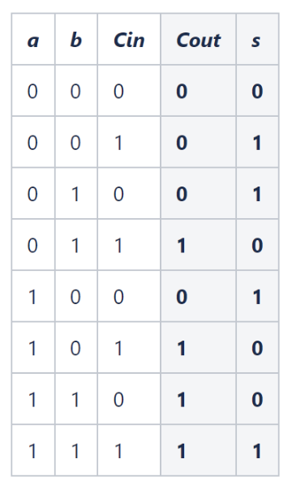 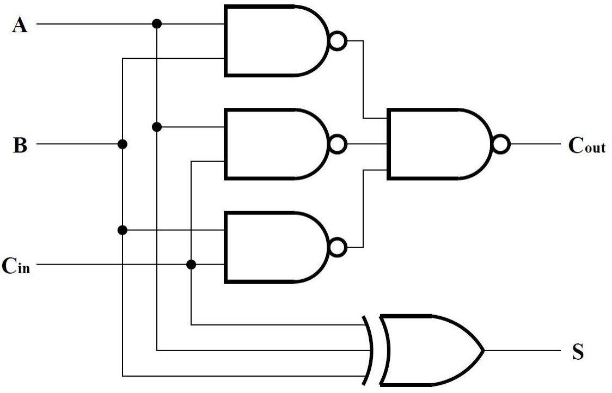 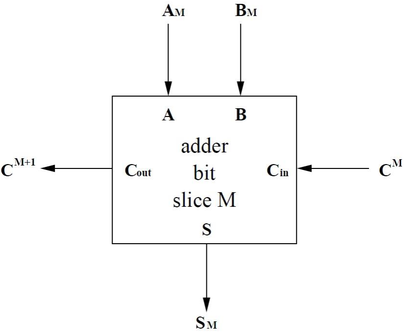
而Ripple Carry Adder就是由这些基本的Full Adder上组合起来的，用来实现多位加法的。我们把一个Full Adder抽象为一个Box，输入为Cin A B，输出为Cout和S，其中S作为本位计算的结果，是会作为最终加法运算的结果输出的，而Cout作为进位，是中间计算的产物，Cout作为下一个位的Cin，然后多个Full Adder就通过Cout传递向Cin串联在一起，组成一个Ripper Carry Adder(名字大概是由于Carry这一位就像水波一样一层层外推，一层层传递？)其背后的是递归的思想（给定n完成n+1），递归需要一个初始条件，Ripper Carry Adder的第一个加法器输入的Cin为0，A B从要被计算的数中来，最后输出\(S_{n}S_{n-1}..S_{1}\)作为运算的结果，最后一位Cout可以用来判断unsigned的加法计算有没有overflow
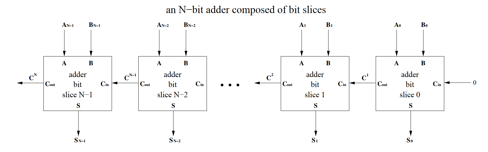 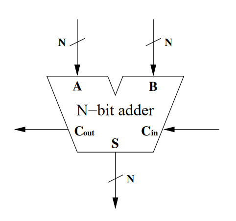
这些电路元器件的符号是逐层抽象的结果，先把CMOS抽象成逻辑门（AND门，NAND门，XOR门...）再把Full Adder里面的逻辑门实现的电路抽象成一个box，只显示输入和输出来表示Full Adder，再把N个Full Adder合成N位的Ripple Carry Adder，最后把Ripple Carry Adder抽象成一个box，不显示里面的Full Adder，只展示输入输出，N位的Ripple Carry Adder又可以进一步的串联，合成一个2N/3N/...位的更大的加法器
Comparator¶
compartor的搭建在PPT中是一个非常完整的逻辑过程：选择bit slice中间传递信息的bit位数 -> 到赋予传递信息的bit相应的含义 -> 列出真值表 -> 化简相应逻辑 -> 设计门电路 -> 电路优化分析
1选择传递位数¶
不同于人类从高位比较到低位的方法，计算机从低位比较到高位，因为运算的过程无法在中途停下，所以人类的方法在计算机中并不能化简运算，如果从高位比较到低位（如人类），在bit slice中间不需要传递任何信息，因为高位的优先级大于低位，但是从低位比较大到高位就需要传递信息，有三种不同情况，大于，小于，等于，因此用两个bits
2赋予传递信息的bit含义¶
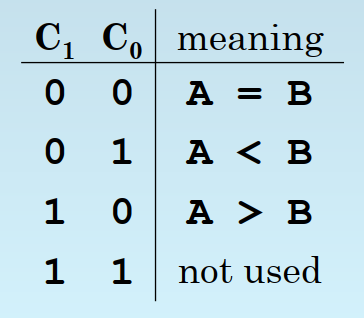
具体怎么设计完全是人为规定的，但是不同的表示方法最后电路的复杂程度不同
3列出真值表¶
原则是本位优先，如当前位A B，若A > B则运算结果不需要看传递的\(C_0\) \(C_1\)就可以确定一定是A > B，若A = B，则由\(C_0\) \(C_1\)的大小来确定最后运算的结果
| A | B | C0 | C1 | Z0 | Z1 |
|---|---|---|---|---|---|
| 0 | 0 | 0 | 0 | 0 | 0 |
| 0 | 0 | 0 | 1 | 0 | 1 |
| 0 | 0 | 1 | 0 | 1 | 0 |
| 0 | 0 | 1 | 1 | X | X |
| 0 | 1 | 0 | 0 | 0 | 1 |
| 0 | 1 | 0 | 1 | 0 | 1 |
| 0 | 1 | 1 | 0 | 0 | 1 |
| 0 | 1 | 1 | 1 | X | X |
| 1 | 0 | 0 | 0 | 1 | 0 |
| 1 | 0 | 0 | 1 | 1 | 0 |
| 1 | 0 | 1 | 0 | 1 | 0 |
| 1 | 0 | 1 | 1 | X | X |
| 1 | 1 | 0 | 0 | 0 | 0 |
| 1 | 1 | 0 | 1 | 0 | 1 |
| 1 | 1 | 1 | 0 | 1 | 0 |
| 1 | 1 | 1 | 1 | X | X |
4化简相应逻辑¶
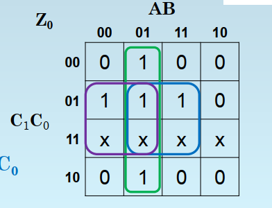 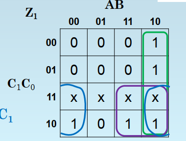
5设计门电路¶
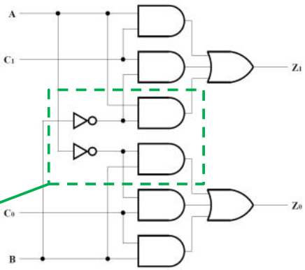 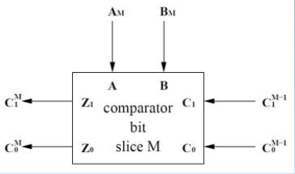
把每个comparator的输出\(Z_0\) \(Z_1\)作为下一个compartor的\(C_0\) \(C_1\)输入，最后一个comparator的输出\(Z_0\) \(Z_1\)显示比较大小的最终结果。初始条件\(C_0C_1 = 00\)，表示两个数相等（初始还没有任何关于输入的信息，不能有任何bias）。comparator也像Ripple Carry Adder一样，最后抽象成一个box，只显示输入，输出，而隐藏内部电路
6分析优化电路¶
分析电路还是采用启发式方法（参见Heuristics Methods），由于采用的电路设计是2-level logic，所以gate delay全部是2（不计算NOT门），bit slice的运算中时间累积的部分是\(C_0\) 和 \(C_1\)，因为\(C_0\) 和 \(C_1\)来自于上一个comparator的\(Z_0\) \(Z_1\)，而\(Z_0\) \(Z_1\)又和三个输入都有关，所以需要的时间是输入到输出的最长时间，最终所需的时间是2N gate delay
如果想要在时间上优化电路，需要减少\(C_0\) \(C_1\)到\(Z_0\) \(Z_1\)的门的数量。对于A B到\(Z_0\) \(Z_1\)的门的数量无所谓，因为A B总是能在固定的时间内获得，时间是沿着\(C_0\) \(C_1\)到\(Z_0\) \(Z_1\)累加的，当comparator的比较的位数N很大时，A B到\(Z_0\) \(Z_1\)造成的常数项delay，在\(C_0\) \(C_1\)到\(Z_0\) \(Z_1\)造成的与N成正比的delay可以忽略不计。在本例子中，从2 level 变成 1 level）并不是很可行，所以设法在空间上优化一下电路
这样化简的理由是1.合并同类项可以减少literal，如AB + BC = B（A + C）由四个literal减少到3个 2.电路都用NAND/NOR，所以最终转化成全部用NAND表示的形式，优化后的电路如下
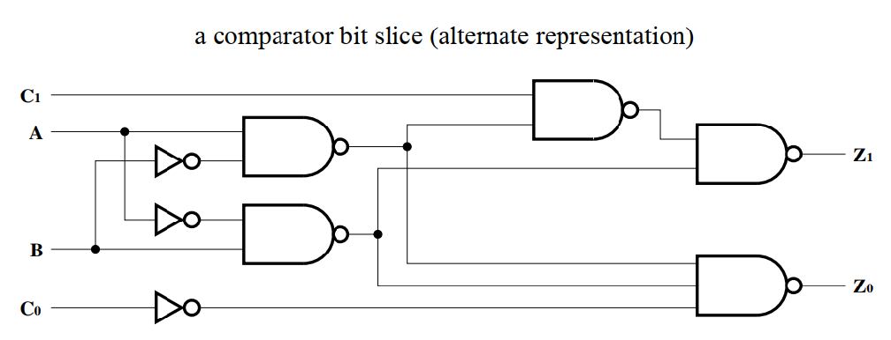
此时A B到输出\(C_0\) \(C_1\)的gate delay 变成3，所以最后的gate delay变成2N + 1（第一次为3，此后每个comparator为2 所以是 3 + 2 + 2 + ... 总共有N-1个2）
拓展到2's Complement¶
对于2's complement的数进行比较，第一位sign bit是需要被特别考虑的，当正数与正数比较的时候，同unsigned 比较，当正数与负数比较的时候，正数一定大于负数，当负数与负数比较的时候？
因为2's complement中 -k是用\(2^N - k\)的bit pattern表示的（参见2's Complement）当 \(-K_1 < -K_2\)时，不等式两边同时加上\(2^N\)，得到\(2^N - K_1 < 2^N - K_2\)，所以负数的比较可以和unsigned的正数一样操作
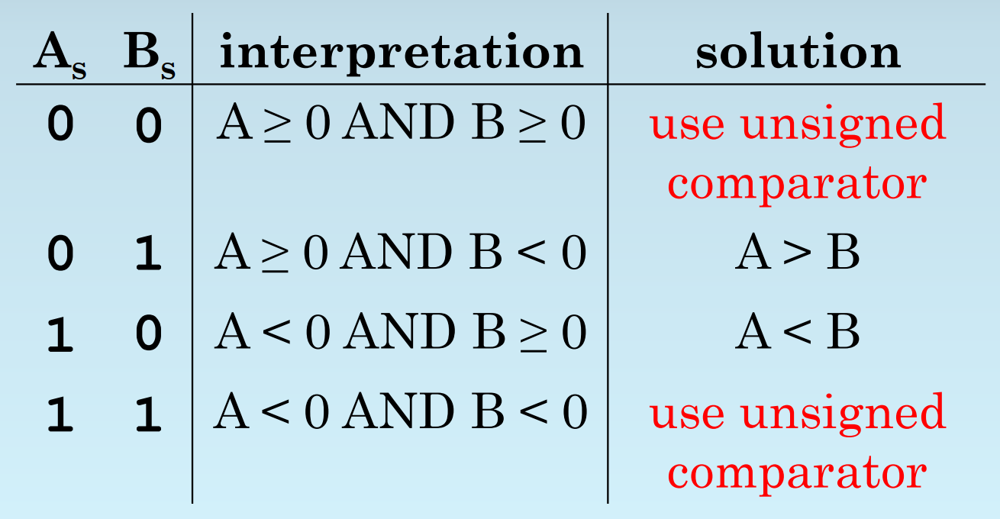 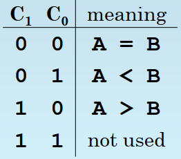
对比\(C_0\) \(C_1\)的设计含义，当sign bit为00 11时，因为遵守unsigned的comparator运算规则，并不需要特别处理，但是当\(A_sB_s\) = 01 10的时候，正确的输出\(Z_1 Z_0\)应该是10 01，但是unsigned comparator的输出（对于unsigned来说1一定是大于0的）\(Z_1 Z_0\)的输出是01 10 此处不符合。一个巧妙的想法是吧unsigned bit的输入对换顺序，这样不影响\(A_sB_s\) = 00 11的时候，因为此时两者相同，完全等价，而对于\(A_sB_s\) = 01 10时，输出刚好对了
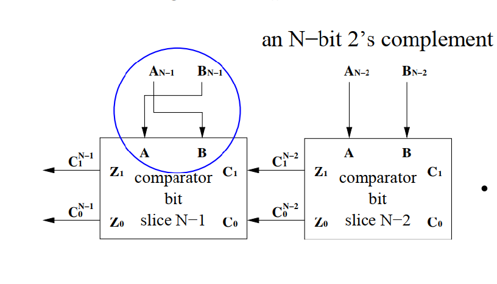
巧妙的思想：如果要加一个信号控制到底是unsigned的运算还是signed的运算，应该怎么做？假设增加的信号为F，当F为1的时候表示signed，为0表示unsigned，把F XOR Signed bit即可，XOR0是不会改变原来的bit的，XOR1会翻转原来的bit，当\(A_sB_s\) = 00 11时，XOR 1 为 11 00 不影响，因为这两种情况等价，当\(A_sB_s\) = 01 10时，XOR 1 为 10 01，刚好相当于把输入\(A_s\)和 \(B_s\)对掉